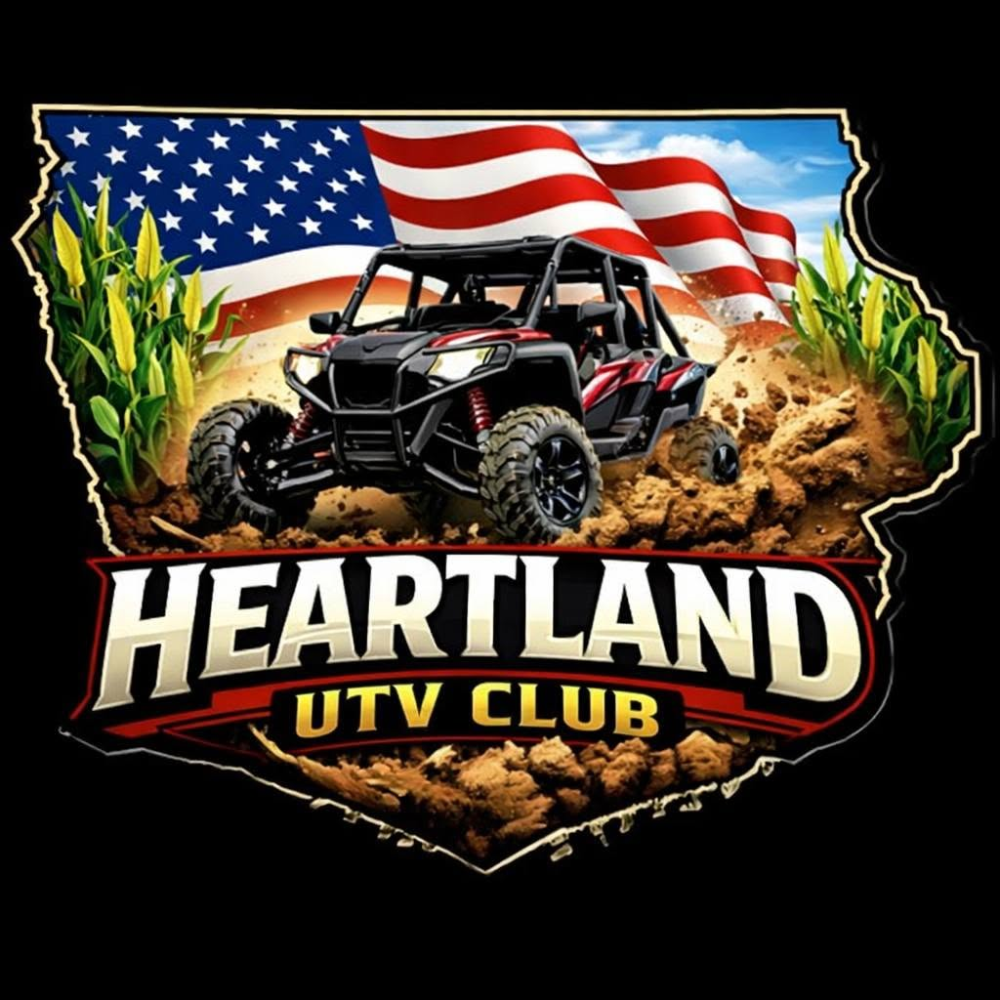

Home
Membership
Events
Gallery
Sponsors
Trail Map
Rules
Contact
Rules
Ride Requirements
4-wheeled ATVs welcome
UTVs welcome
Must be registerable as a UTV or ATV
Must be insured
No homemade machines
Nothing with less than 4 wheels
NO WIDTH RESTRICTIONS!!